![open bracket small roman1 close bracket 1 red outlined star, open bracket small roman 2 close bracket 1 red outlined square,open bracket small roman 3 close bracket 2 red spiral stars open bracket small roman 4 close bracket 1 red outlined circle, open bracket small roman 5 close bracket 1 red solid circle, open bracket small roman 6 close bracket 3 red outlined squares,open bracket small roman 7 close bracket 2 red solid circles, open bracket small roman 8 close bracket 3 red solid stars, open bracket small roman 9 close bracket 3 red spiral circles, open bracket small roman 10 close bracket 3 red solid circles](images/image-515.png)
7. Information processing
Learning Objectives
Recap
Before to learn, we recall the concepts like listing, counting, pattern of Fibonacci series and calculate the unit price of the products by answering the following questions
1. Find the number of all possible triangles that can be formed from the triangle given below.
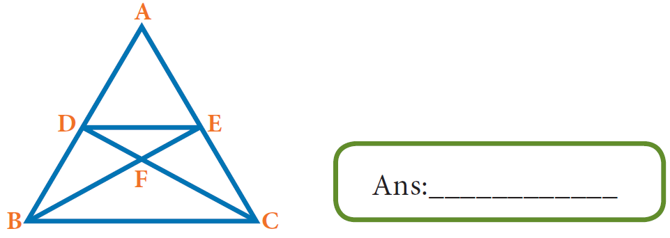
2. Use the numbers given in the figure to form a 3 x 3 magic square.
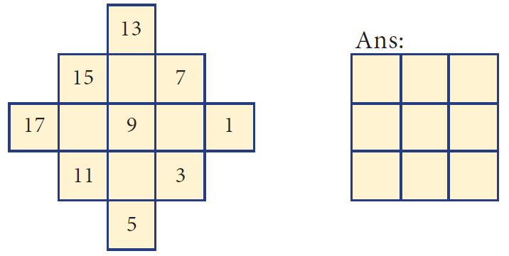
Page number 232
3. Convert the tree diagram in to a numeric expression.
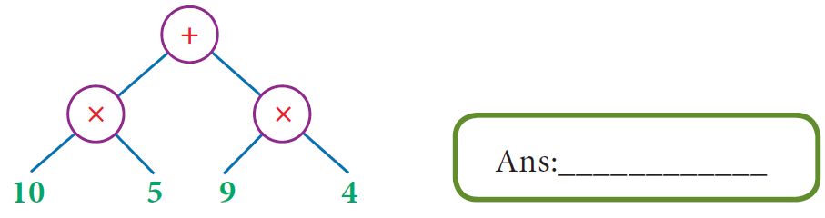
4. open bracket small roman 1 close bracket Find the total time taken by the bus to reach from A to E via B , C and D.
Open bracket small roman 2 close bracket Find which is the shortest route from A to E.
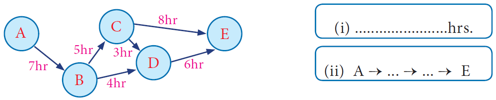
5. Connect the Fibonacci squares through diagonals by curve from corner to corner
across each square to draw a Golden Spiral.
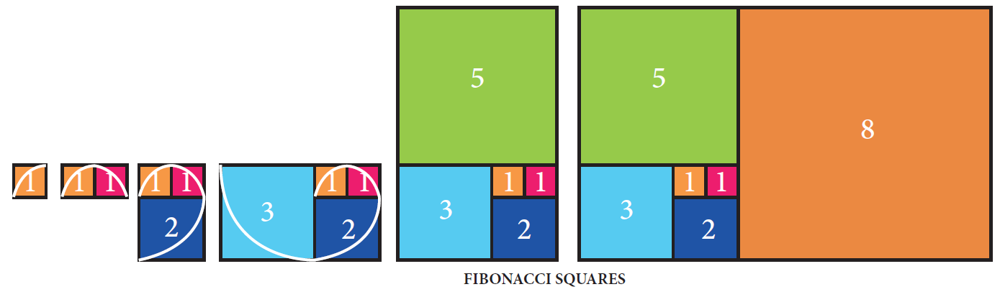
6. When you plan to buy a shirt, one shop offers a discount of rupees 200 on maximum retail price rupees 1000 and another shop offers 15 percentage discount on the same Maximum retail price. Where would you buy question mark
7. Amazing Park is offers a package deal of 5 entrance passes for rupees 130. If one entrance pass normally costs rupees 30, how much will you save by taking advantage of this special deal question mark
Success in Mathematics depends on the development of the number sense, logical thinking and cognitive skills. In this class, we find practical solutions for day to day life situations like selection procedures from various forms, color the given map with minimum number of colors. We are also going to see Fibonacci number pattern in physical and biological phenomena and also discuss some cipher for the higher order thinking which is to do well in the competitive exams. We will also discuss how will you be a wise consumer while shopping and packing. Meanwhile we will play a game to support your mind blooming activities. All the above discussions are very helpful to you, to explore other chapters and improve your interest in Mathematics.
Page number 233
MATHEMATICS ALIVE - INFORMATION PROCESSING IN REAL LIFE
|
|
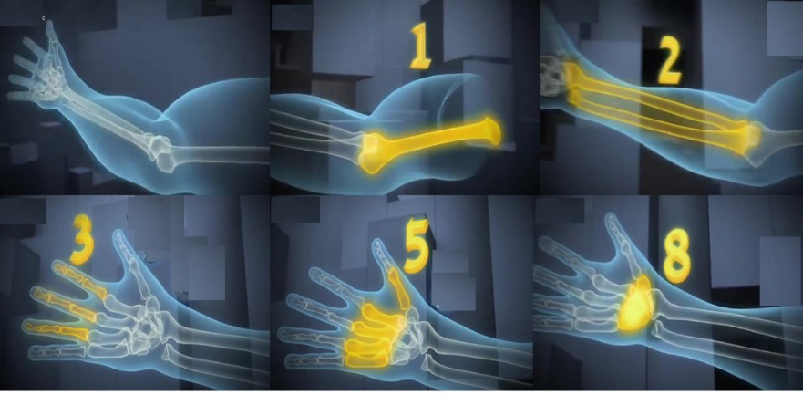 |
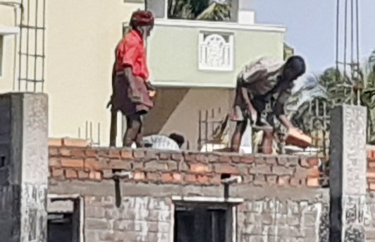 |
Biological example for the Fibonacci numbers
|
Mason packing bricks for constructing a wall between two pillars
|
There are some basic counting techniques which will be useful in determining the number through different ways of arranging or selecting objects. The basic counting principles are given below.
If there are two selections such that they can be done independently in m ways and n ways respectively, then either of the two selections can be done in open bracket m plus n close bracket ways.
Let us learn about this addition principle of counting as given below:
Situation:
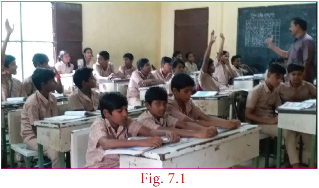
In class VIII, there are 16 boys and 9 girls. The teacher wants to select either a boy or a
girl as the class leader. Let us see, in how many ways can the teacher select the class leader.
The teacher can select the class leader in any one of the following ways.
Hence, the teacher can select the class leader who is a boy or a girl in 25 different ways open bracket 16 boys plus 9 girls close bracket.
Thus, we come to know, if a selection A can occur in m ways and another selection B can occur in n ways, and suppose that both cannot occur together, then A or B can occur in open bracket m plus n close bracket ways. Let us see an example.
Page number 234
Example 7.1
If you are going to a hotel to have food and the hotel offers different food items as shown in Figure 7.2. Find how many ways are possible to have either tiffin or meals question mark
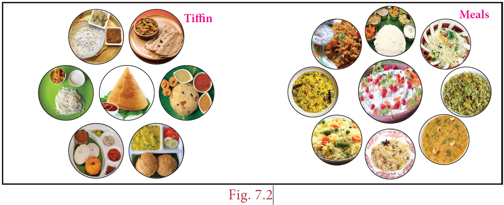
Solution:From the above Figure. 7.2, we come to know
Open bracket small roman 1 close bracket For tiffin, we can choose one among 7 items in 7 ways.
Open bracket small roman 2 close bracket For meals, we can choose one among 9 items in 9 ways.
Therefore, there are 16 Open bracket 7 tiffin items plus 9 meals items close bracket different ways by which we can choose any one food.
If a selection can be performed in m ways, following which another selection can be performed in n ways, and both the selections are dependent on each other then, the two selections together can be performed in exactly open bracket m multiply by n close bracket different ways.
Now, we shall learn about multiplication principle of counting from the following situation.
Situation:
There are 3 places in a city namely A, B and C. There are 3 routes a1, a2 and a3 from A to B. There are 2 different routes, b1 and b2 from B to C as shown in the Figure7.3.
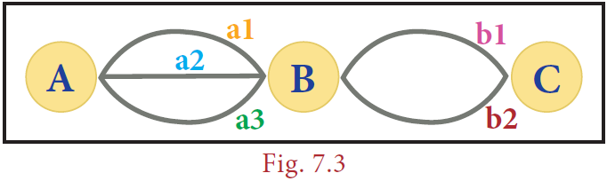
Suppose a person wants to travel from A to C via B. Let’s us see the number of ways he can go from place A to C via B.
Open bracket small roman 1 close bracket In the first way, he can go from A to B in 3 routes and
Open bracket small roman 2 close bracket In the second way, he can go from B to C in 2 different routes.
Therefore, the total number of ways in which he can travel is 6 open bracket 3 multiply by 2 close bracket routes as shown in Figure 7.4.
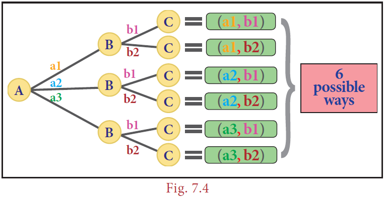
Page number 235
Thus, we come to know, if a selection A can occur in m ways and another selection B can occur in n ways, and both the selections are dependent on each other then, the two selections can be performed in exactly open bracket m multiply by n close bracket different ways. Let as learn more about from the following examples.
Example 7.2
Praveen bought 3 shirts, 2 jeans and 3 pairs of shoes for his birthday. In Fig. 7.5 shows the different ways of wearing the dress. In how many different ways can Praveen wear a dress on his birthday question mark
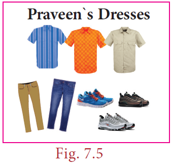
Solution:
Here, Praveen has 3 shirts , 2 jeans and 3 pairs of shoes. He can wear a dress either this way or he can have the choices as shown in the Figure. 7.6
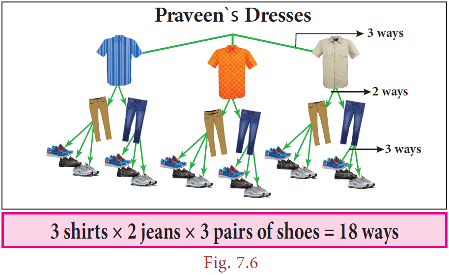
Therefore, Praveen can wear his dress in 18 open bracket 3 multiply by 2 multiply by 3 close bracket different possible ways on his birthday.
Example 7.3
In class VIII, a math club has four members M, A, T and H. Find the number of different ways, the club can elect
Open bracket small roman 1 close bracket a leader,
Open bracket small roman 2 close bracket a leader and an assistant leader.
Solution:
Open bracket small roman 1 close bracket to elect a leader
In class VIII, a math club has four members namely M, A, T and H.
Therefore, there are 4 open bracket 4 multiply by 1 close different ways by which they can be elected a leader.
Page number 236
Open bracket small roman 2 close bracket To elect a leader and an assistant leader
In the Figure. 7.7, the red shaded boxes show that same member comes twice. As, one person cannot have two leadership, therefore, the red shaded boxes cannot be counted. So, there are only 12 open bracket open bracket 4 multiply by 1 multiply by 4 close bracket minus 4 close bracket different ways open bracket shown in yellow boxes and green boxes close bracket to choose a leader and an assistant leader for the math club.
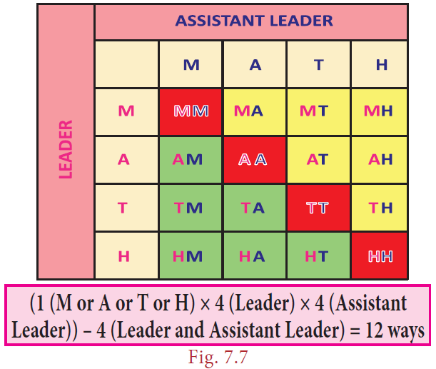
Box items
Activity
1. Determine the number of two-digit numbers that can be formed using the digits 1, 3 and 5 with repetition of digits allowed.
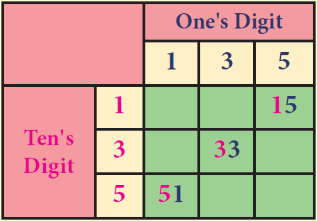
The activity consists of two parts
Open bracket small roman 1 close bracket Choose a one's digit.
Open bracket small roman 2 close bracket Choose a ten's digit.
Complete the table given beside
2 Find the three digit numbers that can be formed using the digits 1, 3 and 5 without repetition of digits. Complete the tree diagram given below to the numbers
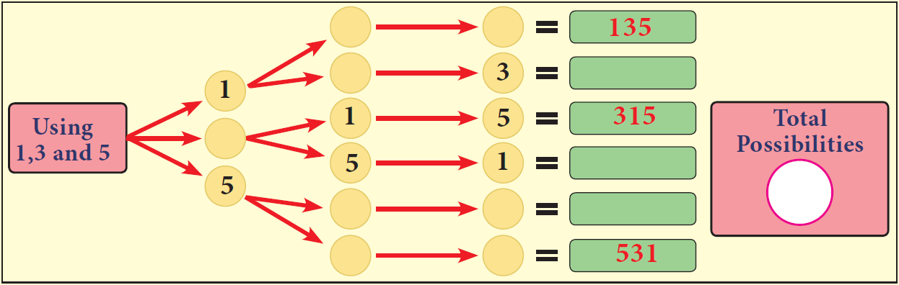
Box items
Do you know question mark
A password using 6 characters is created where the first 2 characters are any of alphabets, the third character is any one special character like @, #, $, %, &, _ ,plus ,~, * or - and the last 3 characters are any of the numbers from 0 to 9. For that, there are 26 multiply by 26 multiply by 10 multiply by 10 multiply by 10 multiply by 10 equal to 67,60,000 number of different ways possible to create that password.
Page number 237
Example 7.4
In how many ways, can the students answer 3 true or false type questions in a slip test question mark
Solution:
Open bracket Small roman 1 close bracket Assuming that the question Q 1 is answered True, questions Q 2 and Q 3 can be answered as TT, TF, FT and FF in 4 ways.
Open bracket small roman 2 close bracket Assuming that the question Q 1 is answered False, Q 2 and Q 3 can also be answered as TT, TF, FT, and FF in 4 ways.
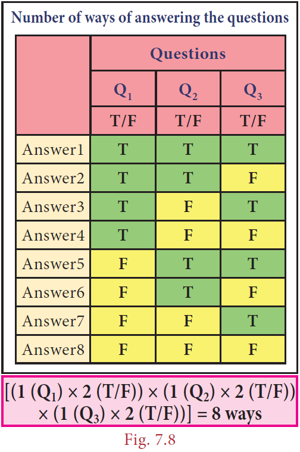
Thus, as each question has only two options open bracket True or False close bracket in 2 ways, the number of ways of answering these 3 questions in a slip test is 8 open bracket 2 multiply by 2 multiply by 2 close bracket possible ways as shown in Figure.7.8.
Example 7.5
Madhan wants to buy a new car. The following choices are available for him.
• There are 2 types of cars as shown in the Figure. 7.9
• There are 5 colours available in each type as shown in Figure. 7.9.
• There are 3 models available in each colour
Open bracket small roman 1 close bracket GL open bracket standard model close bracket
Open bracket small roman 2 close bracket SS open bracket sports model close bracket
open bracket small roman 3 close bracket SL open bracket luxury model close bracket
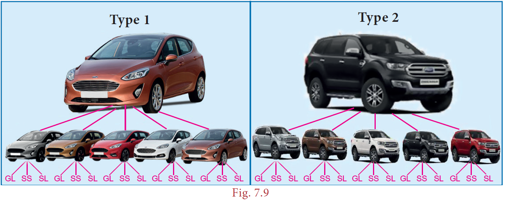
Open bracket small roman 1 close bracket In how many different ways can Madhan buy any one of the new car question mark
Open bracket small roman 2 close bracket If the white colour is not available in Type 2, then in how many ways can Madan buy a new car among the given option question mark
Page number 238
Solution:
Open bracket small roman 1 close bracket To buy any one of the new car from the given choices
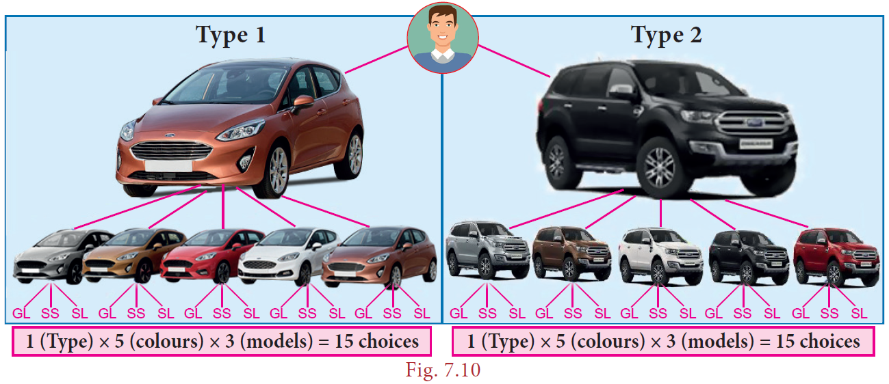
Here, we have 2 types of car with 5 different colours and 3 models in each colour.
Therefore, there are 30 open square bracket 2 open bracket 1 multiply by 5 multiply by 3 close bracket close square bracket different ways to buy a new car by Madhan.
Open bracket small roman 2 close bracket If the white colour is not available in Type 2, then...
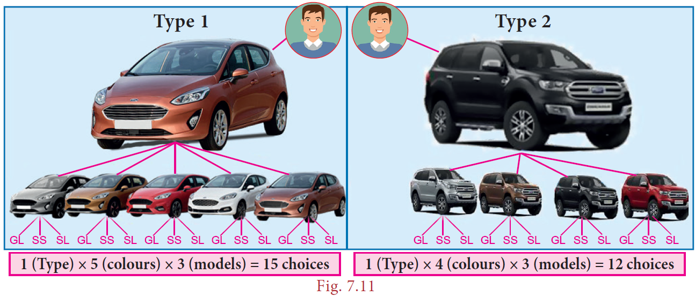
Open bracket small roman 1 close bracket For Type 1, we have 5 colours and 3 models and hence there are 1 multiply by 5 multiply by 3 is equal to 15 choices.
Open bracket small roman 2 close bracket For Type 2, we have only 4 colours and 3 models and hence there are 1 multiply by 4 multiply by 3 is equal to 12 choices.
Therefore, there are 27 open bracket 15 plus 12 close bracket different ways to buy a new car by Madhan.
The above example illustrates both the addition and multiplication principles.
Any game that uses features can be used to stimulate logical thinking and it provides an interesting and challenging context for exploring ideas in discrete mathematics.
Now, let us learn about a SET game
A SET game proves to be an excellent extension for activities that involve organizing the objects by attributes. The SET game builds the cognitive, logical, spatial reasoning as well as visual perception skills.
The SET game is a puzzle that uses cards which have four features on them. They are shapes, colours, shades and the number of shapes.
Page number 239
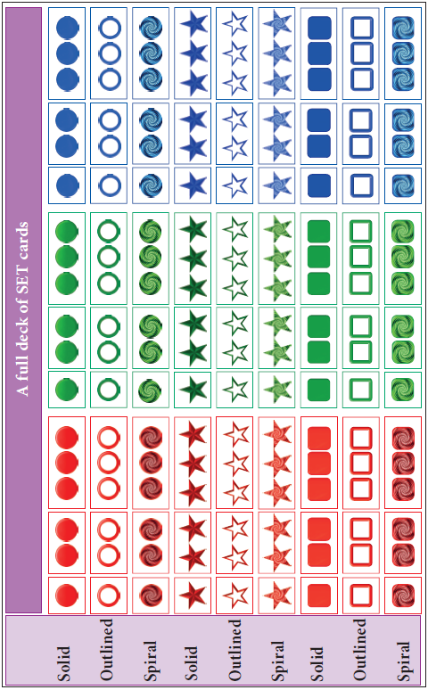
Figure 7.12
Page number 240
In one full deck of SET cards, there are 3 different shapes: circle, star, square and in 3 different colours: red, green, blue. 3 Each of these 9 cards open bracket 3 shapes multiply by 3 colours close bracket have 3 different shades: solid, outlined, spiral and also, they can be paired 3 with different numbers: one, two and three. So, there are totally 81 cards open bracket3 shapes multiply by 3 colours multiply by 3 shades multiply by 3numbers closed bracket in the deck as shown in Figure. 7.12.
A SET which consists of three cards should satisfy all the four following conditions:
Box item
Open bracket small roman 1 close bracket All the three cards have the same shape or have three different shapes.
Open bracket small roman 2 close bracket All the three cards have the same colour or have three different colours.
Open bracket small roman 3 close bracket All the three cards have the same shade or have three different shades.
Open bracket small roman 4 close bracket All the three cards have the same number or have three different numbers.
Situation:The teacher displays 12 cards as shown in Figure. 7.13 and explains how to form a SET using these 2 cards and taken from them. Now, follow the step by step procedure to figure out the third card to complete this SET is as follows.
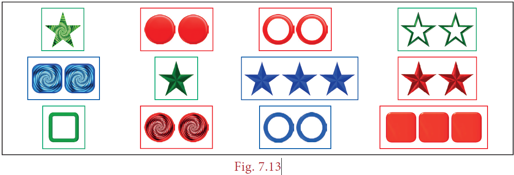
.Remember, a SET consists of 3 sets of cards.
STEP 1: If you look at the shape then, one is star and the other one is also star. These two cards have the same shape. So, the last card also should have the same shape.
STEP 2: If you look at the colour then, one is green and the other is red These two cards have different colours. So, the last card also should have a different colour that is blue.
STEP 3: If you look at the shade then, one is solid and the other is also solid. These two cards have the same shade. So, the last card also should have the same shade.
STEP 4: If you look at the number then, one star card is green solid and the other has two starred solid cards. So, the last card also should have a different number three blue cards. Therefore, these three sets of cards have different numbers and different colours with same shape and shade.
Page number 241
Finally,
Shape: All same tick Colour: All different tick
Shade: All same tick Number: All different tick
Now, this completes the rules for a SET.
Now, the teacher asks the students to find two more SETs from Figure.7.13. Let us check the SET again.
1.
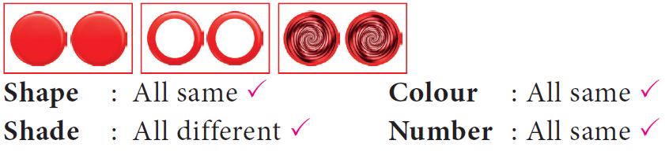
Yes, this is a SET.
2.
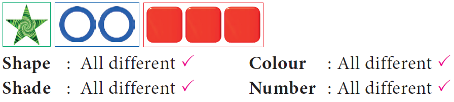
Yes, this is a SET.
Again, the teacher makes an arrangement of cards and asks them to check whether, it forms a SET question mark
3.
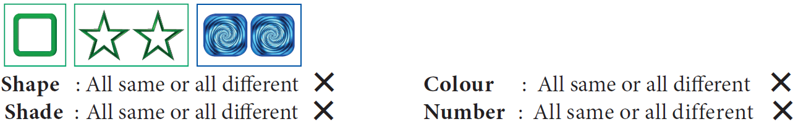
No, this is not a SET.
Since, the above SET does not complete the SET rule.
Thus, we come to know a SET consists of 3 set of cards in which each individual feature is either all same on each card or all different on each card.
Box item
Think
For the given set of 12 cards from open bracket 7.13 close bracket 7 sets are possible. Explore. Open bracket repetition of cards allowed close bracket
Box item
Activity
Choose the correct card to complete the perfect SET. One is done for you.
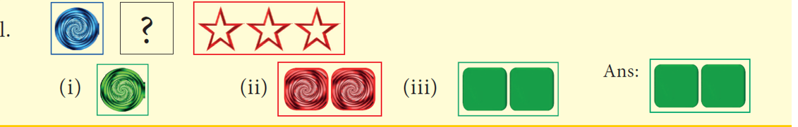
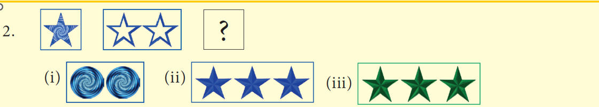
Page number 242
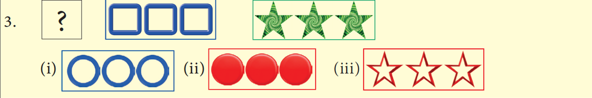
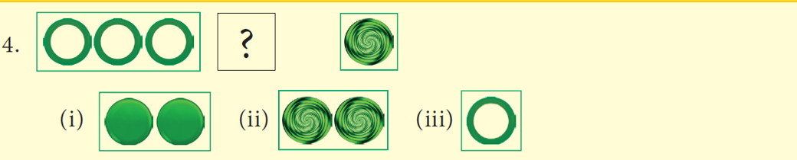
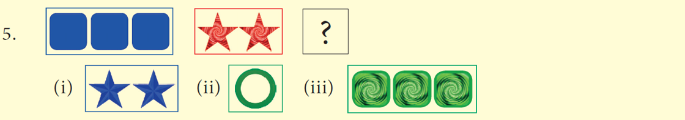
Box item
Try these
1. Find any five SETs among these set of cards open bracket repetition of cards allowed close bracket .
2. This is an example for a magic square in SETs. Can you make another two question mark
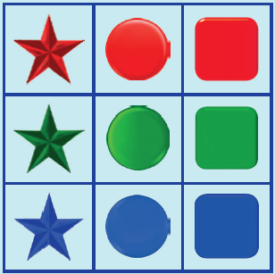
Map colouring is the act of assigning different colours to different features on a map. In Mathematics, the problem is to determine the minimum number of colours required to colour a map, so that no two adjacent regions have the same colour. Let us learn about the role of map colouring.
Situation:
The teacher divides the class in to two groups and instructs one group to use as many colours possible and another group use minimum number of colours for the given patterns.
The only rule is that, shaded regions cannot share the same colour at edges, although they are allowed to meet at a corner.
Page number 243
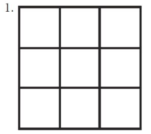
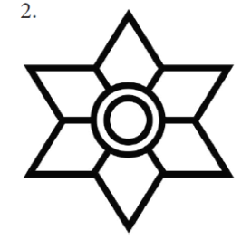
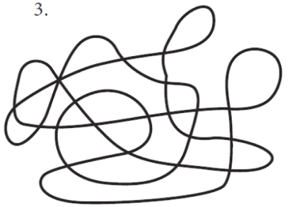
Figure 7.14
Figure. 7.15, shows how each group is coloured
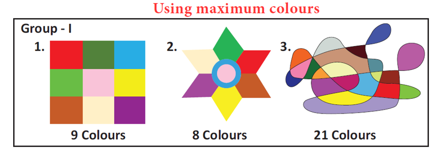
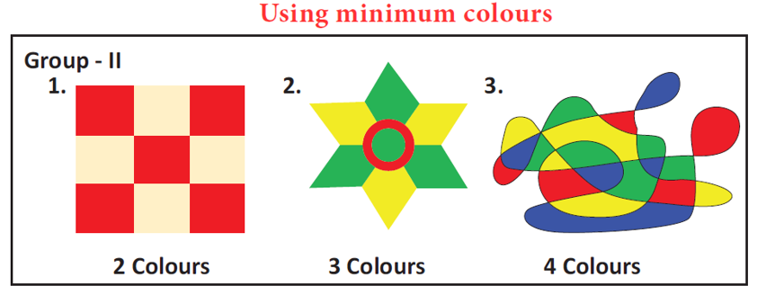
From this investigation, we will get results. Which could be more interesting, if we want to colour a map.
Map colouring is about the colours that must be chosen for regions in a map, which make bordering regions with different colours. Let us learn more from the following examples.
Example 7.6
Colour a map of South India open bracket Figure. 7.16 close bracket with the fewest number of colours.
Solution:
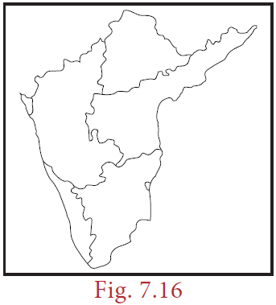
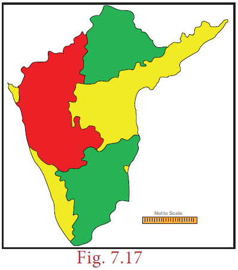
This is one of the solutions with minimum number of colours. Try for more solutions.
Page number 244
Box item
Activity
Try to colour the INDIA-States map with the fewest number of colours.
Box item
Try these
Draw your school building map showing the H M room, class rooms, staff room, science lab, P E T room, computer lab, office room etc., and use map colouring to determine the minimum number of colours that can be used to colour the map of your school.
Exercise 7.1
1. You want to have an ice cream or a cake. There are three flavours open bracket chocolate, strawberry, and vanilla close bracket in ice creams, and two flavours open bracket orange and red velvet close bracket in the cakes. In how many possible ways can you choose an ice cream or a cake question mark
2 Shanthi has 5 chudithar sets and 4 frocks. In how many possible ways, can she wear either a chudithar or a frock question mark
Page number 245
3. In a Higher Secondary School, the following groups are available in eleventh standard
Roman 1 Science Group:
Open bracket small roman 1 close bracket Physics, Chemistry, Biology and Mathematics
Open bracket small roman 2 close bracket Physics, Chemistry, Mathematics and Computer Science
Open bracket small roman 3 close bracket Physics, Chemistry, Biology and Home Science
Roman 2 Arts Group:
Open bracket small roman 1 close bracket Accountancy, Commerce, Economics and Business Maths
Open bracket small roman 2 close bracket Accountancy, Commerce, Economics and Computer Science
Open bracket small roman 3 close bracket History, Geography, Economics and Commerce
Roman 3 Vocational Group:
Open bracket small roman 1 close bracket Biology, Nursing Theory, Nursing Practical one and Nursing Practical two
Open bracket small roman 2 close bracket Home Science, Textiles and Dress Designing Theory, Textiles and Dress Designing Practical one and Textiles and Dress Designing Practical two
In how many possible ways, can a student choose a group question mark
4. If you have 2 school bags and 3 water bottles then, in how many different ways can you choose each one of them, while going to school question mark
5. Roll numbers are created with a letter followed by 3 digits in it, from the letters A, B, C, D and E and any 3 digits from 0 to 9. In how many possible ways can the roll numbers be generated question mark open bracket except A000, B000, C000, D000 and E000 close bracket
6. A safety locker in a jewel shop requires a 4 digit unique code. The code has the digits from 0 to 9. How many unique codes are possible question mark
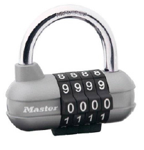
7. An examination paper has 3 sections, each with five questions and students are instructed to answer one question from each section. In how many different ways of can the questions be answered question mark
8. The given spinner is spun twice and the two numbers got are used to form a 2 digits number. How many different 2 digits numbers are possible question mark
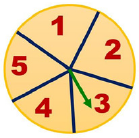
9. Ramya wants to paint a pattern in her living room wall with minimum budget. Help her to colour the pattern with 2 colours but make sure that no two adjacent boxes are the same colour. The pattern is shown in the picture.
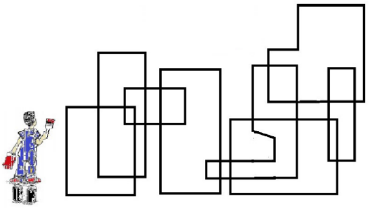
Page number 246
10. Colour the regions in the maps with few colours as possible but make sure that no two adjacent countries are of the same colour.
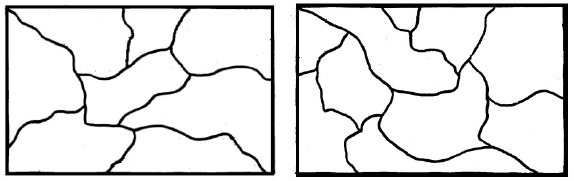
Objective Type Questions
11. In a class there are 26 boys and 15 girls. The teacher wants to select a boy or a girl to represent a quiz competition. In how many ways can the teacher make this selection question mark
Option A is 41
Option B is 26
Option C is 15
Option D is 390
12. How many outcomes can you get when you toss three coins once question mark
Option A is 6
Option B is 8
Option C is 3
Option D is 2
13. In how many ways can you answer 3 multiple choice questions, with the choices A, B, C and D question mark
Option A is 4
Option B is 3
Option C is 12
Option D is 64
14. How many 2 digit numbers contain the number 7question mark
Option A is 10
Option B is 18
Option C is 19
Option D is 20
We have learnt in earlier classes, on how all beautiful things in nature as well as man made things are connected with Mathematics. Now, we just refresh everyone’s memory and show how Math can be beautiful when seen in physical and biological things everywhere around us. Fibonacci open bracket real name Leonardo Bonacci close bracket was an Italian mathematician who developed the Fibonacci Sequence. Remember the pattern of the Fibonacci sequence we already studied in standard six it looks like this: 1, 1, 2, 3, 5, 8, 13, 21, 34... and it goes on. Let us tabulate the Fibonacci sequence and find a rule.
Term open bracket n close bracket |
1 |
2 |
3 |
4 |
5 |
6 |
7 |
8 |
9 |
10 |
11 |
12 |
13 |
14 |
15 |
extra |
F open bracket n close bracket |
1 |
1 |
2 |
3 |
5 |
8 |
13 |
21 |
34 |
55 |
89 |
144 |
233 |
377 |
610 |
extra |
F open bracket 1 close bracket |
F open bracket 2 close bracket |
F open bracket 3 close bracket |
F open bracket 4 close bracket |
F open bracket 5 close bracket |
F open bracket 6 close bracket |
F open bracket 7 close bracket |
extra |
1 |
1 |
2 |
3 |
5 |
8 |
13 |
extra |
F open bracket 3 close bracket equal to F open bracket 2 close bracket plus F open bracket 1 close bracket
We observe that the third term of the Fibonacci sequence is the sum of second term and the First term.
That is, F open bracket 3 close bracket equal to F open bracket 2 close bracket plus F open bracket 1 close bracket and so we can extend and write the rule is
F open bracket n close bracket equal to F open bracket n minus 1 close bracket plus F open bracket nminus2 close bracket
where F open bracket n close bracket is the nth term
F open bracket n minus 1 close bracket is the previous term to the n thu term
F open bracket n minus 2 close bracket is the term before the n minus 1th term
This is how the Fibonacci Sequence is. Let us learn more from the following real life examples.
Page number 247
Situation:
Let us look at the family tree of a male drone bee and a female bee as shown Figure 7.19. Here, female bees have 2 parents, male open bracket drone close bracket bees have just one parent, a female. open bracket Male bee open bracket drone close bracket are produced by the queen’s unfertilized eggs, so male open bracket drone close bracket bees only have a mother but no father exclamatory close bracket.
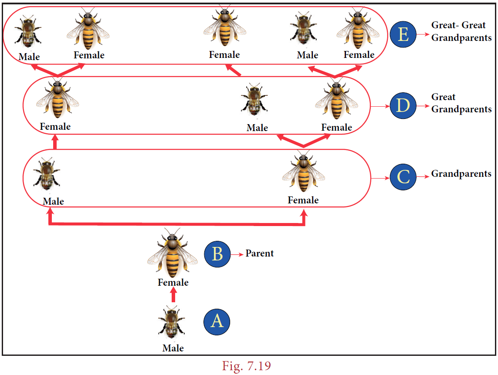
From the picture the following points are noted:
1. The male A has 1 parent, a female B.
2. The male A has 2 grandparents C, since his mother had parents C, a male and a female.
3. The male A has 3 great-grandparents D: since his grandmother has two parents but his
grandfather has only one.
Now, answer, how many great-great-grandparents did the male A have question mark
Let us try to find the relationship among the pattern of bees family by representing in the
tabular form given below,
Number of A |
Parents B |
Grandparents C |
Great Grandparents D |
Great - Great Grandparents E |
Great - Great - Great Grandparents F |
a Male bee open bracket 1 close bracket |
1 |
2 |
3 |
5 |
8 |
a Female bee open bracket 1 close bracket |
2 |
3 |
5 |
8 |
13 |
We see the Fibonacci numbers 1, 1, 2, 3, 5, 8, 13… in the above table.
Page number 248
Box item
Note
The difference between two consecutive numbers of the Fibonacci sequence increase very quickly.
Open bracket open bracket For example F open bracket 5 close bracket minus F open bracket 4 close bracket is equal to 5 minus 3 equal to 2 ; F open bracket 10 close bracket minus F open bracket 9 close bracket is equal to 55 minus 34 is equal to 21 ; F open bracket 15 close bracket minus F open bracket 14 close bracket is equal to 610 minus 377 is equal to 233 close bracket open bracket 1, 1, 2, 3, 5, 8, 13, 21, 34, 55, 89, 144, 233, 377, 610, 987, 1597, 2584, 4181, 6765, 10946 extra close bracket close bracket
Example 7.7
Given that one pair of new born rabbits they produce a new pair each month and from the second month, each new pair can breed themselves. Find how many pairs of rabbits are bred from one pair in a year, and find the relationship between the number of months and the number of pairs of rabbits by tabulation open bracket a pair means open bracket a male and a female close bracket close bracket.
Solution:
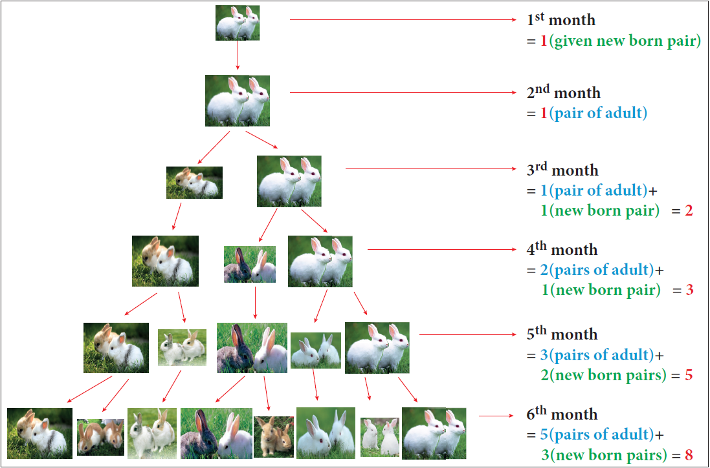
The below picture clearly forms the sequence is 1,1,2,3,5,8... Here, we find the pattern in which each number is in the Fibonacci sequence, obtained by adding together with previous two. Going on like this to find subsequent numbers at the twelfth month, we will get 144 pairs of rabbits. In the other words, twelfth Fibonacci number is 144.
Numbers of months |
1 |
2 |
3 |
4 |
5 |
6 |
7 |
8 |
9 |
10 |
11 |
12 |
Number of pairs of rabbits |
1 |
1 |
2 |
3 |
5 |
8 |
13 |
21 |
34 |
55 |
89 |
144 |
Page number 249
Box item
Activity
Using the given Table one, find the pattern, answer the following questions and colour the values in the given Table two. One is done for you.
Table One
Term open bracket n close bracket |
1 |
2 |
3 |
4 |
5 |
6 |
7 |
8 |
9 |
10 |
11 |
12 |
13 |
14 |
15 |
extra |
F open bracket n close bracket |
1 |
1 |
2 |
3 |
5 |
8 |
13 |
21 |
34 |
55 |
89 |
144 |
233 |
377 |
610 |
extra |
1. Where are the even Fibonacci Number s question mark Colour both the term n and where F open bracket n close bracket is even in yellow. Do you find any pattern question mark Every Third Fibonacci number is a multiple of 2 open bracket even close bracket.
2. Where there are Fibonacci numbers which are multiple of 3question mark Colour both the term n and where F open bracket n close bracket is multiple of 3 in red. Write down the pattern you find
Every DASH Fibonacci number is DASH
3. What about the multiple of 5question mark Colour both the term n and where F open bracket n close bracket is multiple of 5 in blue. Write down the pattern you find.
Every DASH That is DASH
4. What about the multiple of 8question mark Colour both the term n where F open bracket n close bracket is multiple of 8 in green. Write down the pattern you find.
Every DASH That is DASH
Table roman 2
Term open bracket n close bracket |
1 |
2 |
3 |
4 |
5 |
6 |
7 |
8 |
9 |
10 |
11 |
12 |
13 |
14 |
15 |
extra |
F open bracket n close bracket |
1 |
1 |
2 |
3 |
5 |
8 |
13 |
21 |
34 |
55 |
89 |
144 |
233 |
377 |
610 |
extra |
From the above activity, we conclude that Every Fibonacci number is a factor of open bracket a term number of close bracket Fibonacci numbers in multiples.
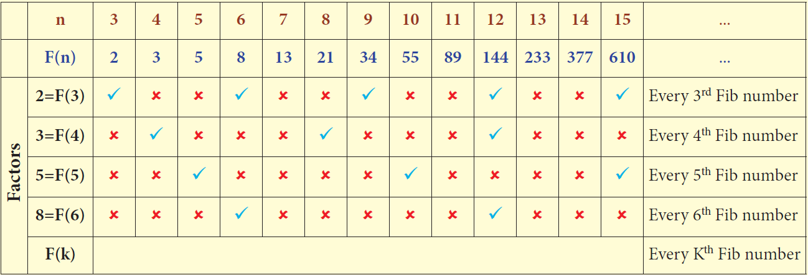
From the above table, we get a general rule as Every kth Fibonacci number is a multiple of F open bracket k close bracket.
Page number 250
We have learnt in class VI that iteration is a process wherein a set of instructions or structures are repeated in a sequence for a specified number of times or until a condition is met. Here, we are going to learn to find Highest common factor H C F by listing all factors and find the biggest, then to find Highest common factor by repeated subtraction and see to how much faster the iteration goes open bracket and how in fewer steps you get the Highest common factor close bracket and then how to improve further by repeated division and remainder and that both lead to the same solution but one is faster than the other.
We know that, Highest common factor is used in simplifying or reducing fractions. To understand how this concept applies in real life, imagine the following situation.
1 Factorisation Method:
Situation:
Let us assume that you have 20 mangoes and 15 apples. You want to donate them together equally among the orphan children. How many orphan children can you help at the maximum question mark
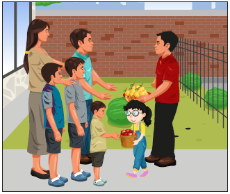
Here, basically question demands finding Highest common factor of two numbers. H C F is Highest Common Factor, also known as G C D open bracket Greatest Common Divisor close bracket. Highest common factor of two or more than two numbers is such that, it is the largest possible number which divides given numbers completely.
Here, let us find the Highest common factor of 20 mangoes and 15 apples.
Factors of 20 equal to 1, 2, 4, 5, 10, 20
Factors of 15 equal to 1, 3, 5 ,15
So, the Highest common factor of 20 and 15 is 5. That is, you can a help maximum of 5 orphan children. So that for 5 children you can give 4 mangoes open bracket 20 divided by 5 is equal to 4 close bracket 4 mangoes and 3 apples open bracket 15 divided by 5 equal to 3 close bracket 3 apples to each of them. In this way you can distribute equally the mangoes and the apples to each child.
2 Prime Factorisation Method:
Situation:
Suppose there are 18 students in Class 7th standard and 27 in Class 8th standard and each class is divided into teams to prepare for an upcoming sports tournament, with the winning teams from each class play each other in the final. What would be the biggest possible team size that you could divide both these classes such that each team has exactly the same number of students and that no one is left behind.
Page number 251
The problem here is to find the Highest common factor of 18 and 27.
Prime Factors of 18 is equal to 2 multiply by 3 multiply by 3
Prime Factors of 27 is equal to 3 multiply by 3 multiply by 3
Common prime factors of 18 and 27 is equal to 3 multiply by 3 is equal to 9
So, the Highest common factor of 18 and 27 is 9.
Now, let us learn some more methods of finding the Highest common factor. The largest team member each group is 9, Standard 7 has 2 teams and Standard 8 has 3 teams.
3 Repeated Division Method:
The above methods are easy to find highest common factor, but for larger numbers these methods are tedious to find factors of the given numbers. In that case, alternatively we have some more methods to find highest common factor. Let us learn more about the other methods of finding the highest common factor.
For the above Situation, what if the Class 7 had 396 students and Class 8 had 300 students question mark Then, what would be the biggest possible team size question mark Well, the above said two methods may not help us quickly. So, we can use continuous division method for finding the highest common factor.
STEP 1: Divide the larger number by the smaller number.
Here, 360 is the larger number. So, we divide 360 open bracket Dividend close bracket by 300 open bracket Divisor close bracket. We get the Remainder as 96.
Box item
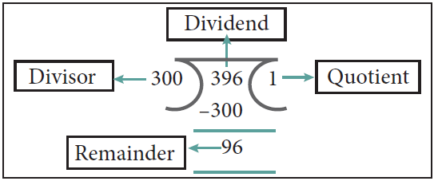
STEP 2: The remainder from Step 1 becomes the new divisor, and divisor of Step 1 becomes the new dividend.
From the step 1, we got 96 as remainder. So, in the second step 96 becomes the new divisor and 300 becomes the new dividend.
Box item
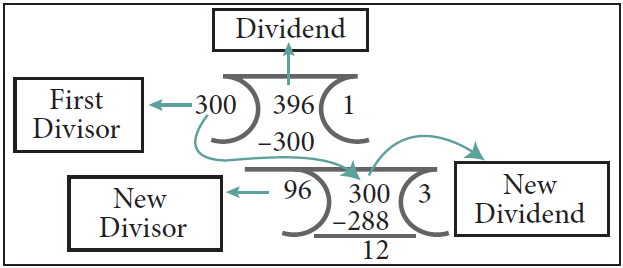
STEP 3: Repeat this division process till remainder becomes zero. The divisor of the last division open bracket when remainder is zero close bracket is the highest common factor.
From step 2, we got 12 as the new remainder which will become the new divisor. In the third step 12 becomes the new divisor and 96 becomes the new dividend. Now, the remainder is zero when 12 is the last divisor of the division. Therefore,12 is the required highest common factor.
Hence, the highest common factor of 396 and 300 is 12. So each team would be 12 students.
Box item
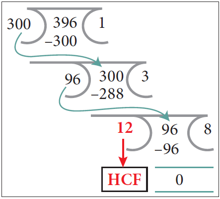
Page number 252
4. Repeated Subtraction Method:
To find the highest common factor for the given two numbers say m and n we do the subtraction continuously until m and n are equal. For example,
Find the highest common factor of 144 and 120
STEP 1: Check whether m is equal to n
Here, take m is equal to 144 and n is equal to 120
Check whether m is equal to n or m greater than n or m less than n. Here m greater than n open bracket 144 greater than 120 close bracket.
STEP 2: m greater than n perform m minus n repeat the process till m equal to n or m less than n perform n minus m repeat
the process till m is equal to n
If m is greater than n, then we perform m minus n and assign the result open bracket the difference close bracket as m. Again, we check whether m and n are equal or not and repeat the process. If m is less than n, then we perform n minus m and we assign the result open bracket the difference close bracket as n. Again, we check whether m and n are equal or not and the process is repeated.
Subtract 120 open bracket n close bracket from 144 open bracket m close bracket till m is equal to n.
First 144 minus 120 is equal to 24 Repeat 120 minus 24 is equal to 96 Repeat 96 minus 24 is equal to 72
Repeat 72 minus 24 is equal to 48 Repeat 48 minus 24 is equal to 24 Repeat 24 minus 24 is equal to 0
STEP 3: When m and n values are equal then that equal value will be the highest common factor open bracket m, n close bracket .
Now m is equal to n, Hence, we conclude that the highest common factor of 144 and 120 is 24. Comparing both the repeated division and repeated subtraction methods, in finding the highest common factor, we can conclude that the repeated subtraction, in one way is easier and gives the highest common factor faster that the repeated division and also that one would want to easily do subtraction rather than division. Isn’t it question mark
Exercise 7.2
1.Using repeated division method, find the highest common factor of the following:
Open bracket small roman 1 close bracket 455 and 26 Open bracket small roman 2 close bracket 392 and 256
Open bracket small roman 3 close bracket 6765 and 610 Open bracket small roman 4 close bracket 184, 230 and 276
2. Using repeated subtraction method, find the highest common factor of the following:
Open bracket small roman 1 close bracket 42 and 70 Open bracket small roman 2 close bracket 36 and 80
Open bracket small roman 3 close bracket 280 and 420 Open bracket small roman 4 close bracket 1014 and 654
3. Do the given problems by repeated subtraction method and verify the result.
Open bracket small roman 1 close bracket 56 and 12
Box item
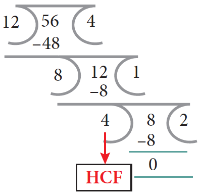
open bracket small roman 2 close bracket320, 120 and 95
Page number 253
4. Kalai wants to cut identical squares as big as she can, from a piece of paper measuring 168 millimetre and by 196 millimetre. What is the length of the side of the biggest square question mark open bracket To find Highest common factor using repeated subtraction method close bracket
Objective Type Questions
5. What is the eleventh Fibonacci number question mark
Open bracket a close bracket 55 Open bracket b close bracket 77
Open bracket c close bracket 89 Open bracket d close bracket 144
6. If F Open bracket n close bracket is a Fibonacci number and n is equal to 8, which of the following is true question mark
Open bracket a close bracket F Open bracket 8 close bracket is equal to F Open bracket 9 close bracket plus F open bracket 10 close bracket
Open bracket b close bracket F Open bracket 8 close bracket is equal to F Open bracket 7 close bracket plus F open bracket 6close bracket
Open bracket c close bracket F Open bracket 8 close bracket is equal to F Open bracket 10 close bracket multiply by F open bracket 9 close bracket
Open bracket d close bracket F Open bracket 8 close bracket is equal to F Open bracket 7 close bracket minus F open bracket 6 close bracket
7. Every 3rd number of the Fibonacci sequence is a multiple of dash
Open bracket a close bracket 2 Open bracket b close bracket 3 Open bracket c close bracket 5 Open bracket d close bracket 8
8. Every dash number of the Fibonacci sequence is a multiple of 8
Open bracket a close bracket 2nd Open bracket b close bracket 4th Open bracket c close bracket 6th Open bracket d close bracket 8th
9. The difference between the 18th and 17th Fibonacci number is
Open bracket a close bracket 233 Open bracket b close bracket 377 Open bracket c close bracket 610 Open bracket d close bracket 987
10. Common prime factors of 30 and 250 are
Open bracket a close bracket 2 multiply by 5 Open bracket b close bracket 3 multiply by 5 Open bracket c close bracket 2 multiply by 3 multiply by 5 Open bracket d close bracket 5 multiply by 5
11. Common prime factors of 36, 60 and 72 are
Open bracket a close bracket 2 multiply by 2 Open bracket b close bracket 2 multiply by 3 Open bracket c close bracket 3 multiply by 3 Open bracket d close bracket 3 multiply by 2 multiply by 2
12. Two numbers are said to be co-prime numbers if their HCF is
Open bracket a close bracket 2 Open bracket b close bracket 3 Open bracket c close bracket 0 Open bracket d close bracket 1
In today’s world, security in information is a fundamental necessity not only for military and political departments but also for private communication. Today’s world of communication has increased the importance of financial data exchange, image processing, biometrics, and e-commerce transaction which in turn has made data security an important issue. Cryptology is defined as the science which is concerned with communication in secured form.
Plain text: The original message is called plain text.
Cipher text or Cipher number: The encrypted output open bracket converted message in to code closed bracket is called Cipher text or Cipher number. Cipher text is written in capital letters, while plain text is usually written in lowercase. A secret key is to use something to generate the Cipher text from the plain text.
Encryption and Decryption: The process of converting the plain text to the Cipher text is called encryption and the vice versa is called decryption.
Page number 254
Let us try to create some Cipher text that we use in the form of coded message at some point in our real life.
1. Shifting Cypher Text
Caesar Cipher
The Caesar Cipher is one of the earliest known and simplest ciphers. It is a type of substitution cipher in which each letter in the text is “shifted” a certain number of places down the alphabets.
To pass an encrypted message from one person to another, it is first necessary that both parties have the ‘key’ for the cipher, so that the sender may encrypt it and the receiver may decrypt it. For the Caesar Cipher, the “key” is the number of characters to shift the cipher alphabet. So, we have to know how big the switch is to break the code.
Let us know about more Ciphers from the following examples and situations.
Example 7. 8
Use Caesar Cipher table set plus 4 and try to solve the given secret sentence.
fvieo mr gshiw ger fi xvmgoc
Solution:
Let us make Caesar Cipher table first. Here, we have to set to plus 4 table.
For that, we have to start letter e to set as A, f as B extra likewise d as Z.
Now, the pilus Caesar Cipher table looks like Box item
Plain Text |
a |
b |
c |
d |
e |
f |
g |
h |
i |
j |
k |
l |
m |
n |
o |
p |
q |
r |
s |
t |
u |
v |
w |
x |
y |
z |
Cipher Text |
W |
X |
Y |
Z |
A |
B |
C |
D |
E |
F |
G |
H |
I |
J |
K |
L |
M |
N |
O |
P |
Q |
R |
S |
T |
U |
V |
The given plain text is
fvieo mr gshiw ger fi xvmgoc
To crack this secret code, follow the steps given below.
Step 1: Using Caesar Cipher table, let us first match the most repeated letters. This will help us to progress faster.
fvieo mr gshiw ger fi xvmgoc
Box item
Plain Text |
a |
b |
c |
d |
e |
f |
g |
h |
i |
j |
k |
l |
m |
n |
o |
p |
q |
r |
s |
t |
u |
v |
w |
x |
y |
z |
Cipher Text |
W |
X |
Y |
Z |
A |
B |
C |
D |
E |
F |
G |
H |
I |
J |
K |
L |
M |
N |
O |
P |
Q |
R |
S |
T |
U |
V |
Page number 255
Box item
Step 2: Then, let us find remaining letters to complete the code.
Plain Text |
a |
b |
c |
d |
e |
f |
g |
h |
i |
j |
k |
l |
m |
n |
o |
p |
q |
r |
s |
t |
u |
v |
w |
x |
y |
z |
Cipher Text |
W |
X |
Y |
Z |
A |
B |
C |
D |
E |
F |
G |
H |
I |
J |
K |
L |
M |
N |
O |
P |
Q |
R |
S |
T |
U |
V |
Thus, the secret sentence is decoded as, BREAK IN CODES CAN BE TRICKY
2. Substituting Cypher Text
Each letter in a text is “substituted” by certain pictures and symbols, a key message, group of words, letters or a combination of these can be used to encode or decode the information. Let us learn more from the following situation.
Situation:
The teacher divides the class in to two teams and displays a worksheet given in the figure below for students to complete. Play a game, teams take turns suggesting letter substitutions and someone entering your suggestions in the table. Teams earn points for correct letter guesses.
Box item
Worksheet 1 Additive Cipher open square bracket key equal to 5 close bracket
Convert a given plain text in to Additive Cipher text open bracket number closed bracket code.
“mathematics is a unique symbolic language in which
the whole world works and acts accordingly.”
Tips for cracking additive ciphers:
Now, to start converting a plain text in to Cipher number, first we have to make a cipher
table as shown below. Here there key is 5. As per key number, we have to start and fill
a equal to zero 5,
b equal to zero 6 excetra z equal to zero 4 respectively.
Box item
Plain Text |
a |
b |
c |
d |
e |
f |
g |
h |
i |
j |
k |
l |
m |
n |
o |
p |
q |
r |
s |
t |
u |
v |
w |
x |
y |
z |
Numbers |
00 |
01 |
02 |
03 |
04 |
05 |
06 |
07 |
08 |
09 |
10 |
11 |
12 |
13 |
14 |
15 |
16 |
17 |
18 |
19 |
20 |
21 |
22 |
23 |
24 |
25 |
Cipher Numbers |
05 |
06 |
07 |
08 |
09 |
10 |
11 |
12 |
13 |
14 |
15 |
16 |
17 |
18 |
19 |
20 |
21 |
22 |
23 |
24 |
25 |
00 |
01 |
02 |
03 |
04 |
To start encoding the text, let us count the frequency of alphabets and frame frequency
table as shown below.
Page number 256
Box item
Plain Text |
a |
b |
c |
d |
e |
f |
g |
h |
i |
j |
K |
l |
m |
n |
o |
p |
q |
r |
s |
t |
u |
v |
w |
x |
y |
z |
Frequency of alphabets in the plain text |
8 |
1 |
6 |
3 |
5 |
0 |
3 |
5 |
7 |
0 |
1 |
5 |
3 |
5 |
5 |
0 |
1 |
3 |
5 |
4 |
3 |
0 |
4 |
0 |
2 |
0 |
With the help of Cipher table and frequency table, let us fill the Cipher numbers for the plain text. Let us first match the most repeated letters open bracket 5 times and above close bracket, then 2 to 4 times repeated letters and finally remaining letters step by step as shown in given figure.
Box item